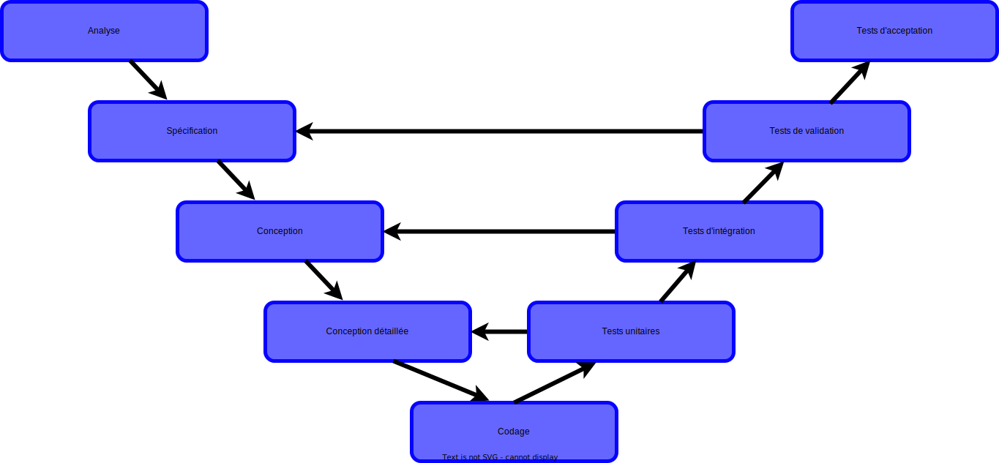
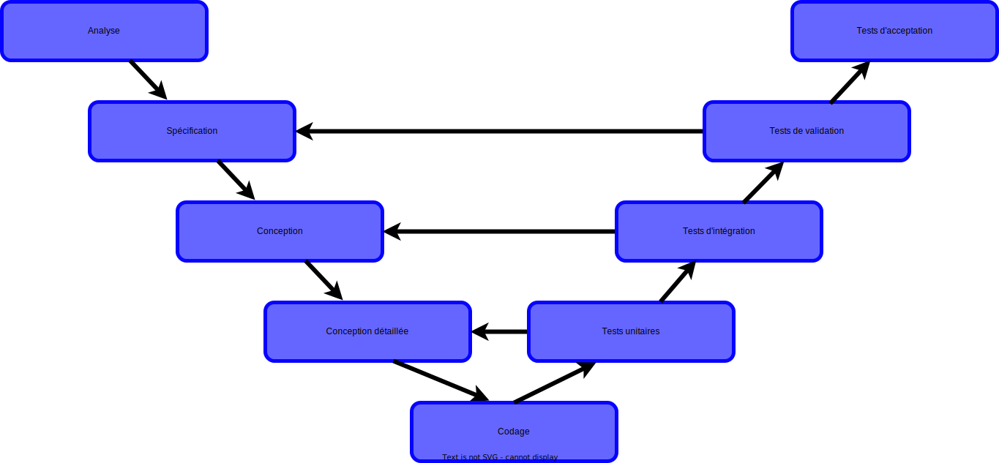
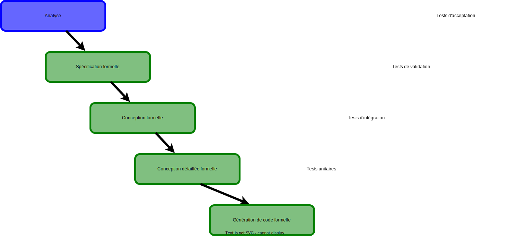
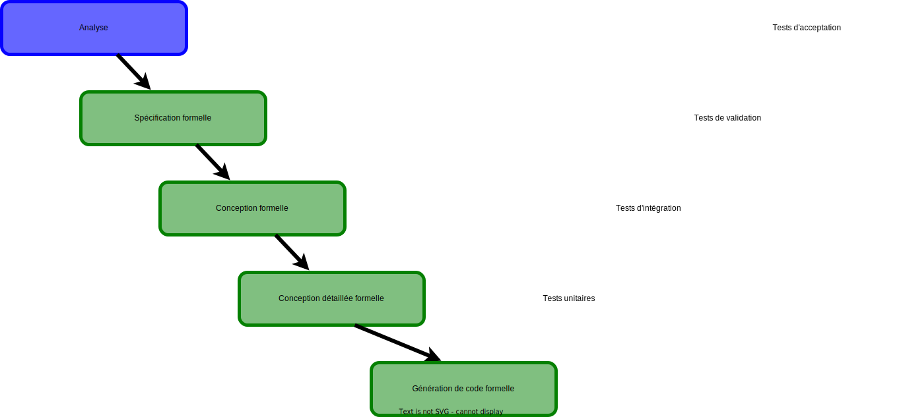
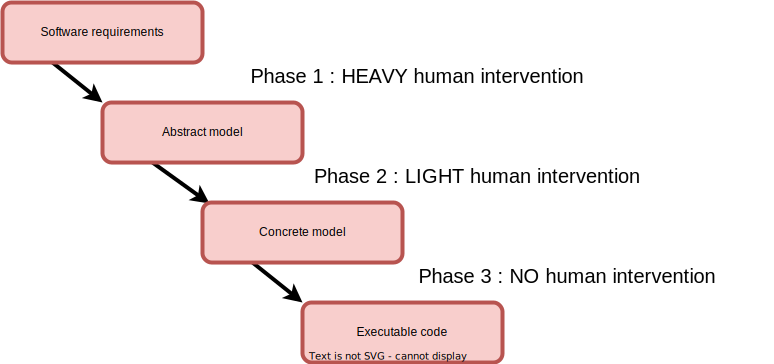
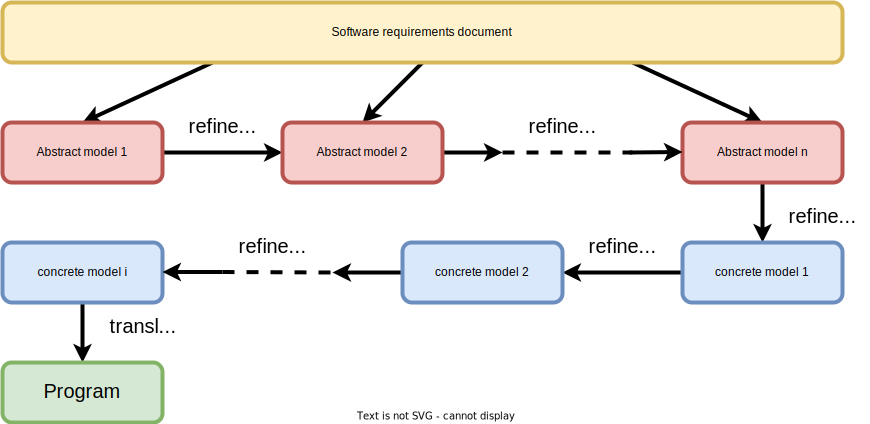

3A cursus ingénieurs - Mention Sciences du Logiciel
CentraleSupelec - Université Paris-Saclay - 2023/2024
CentraleSupelec - Université Paris-Saclay - 2023/2024

Le logiciel informatique


Cycle de développement


 



Des erreurs possibles à toutes les étapes du développement.
Logiciels critiques
- Une défaillance dans un logiciel peut avoir des conséquences catastrophiques (humaines, financières, ...).
- Exemple du calculateur de bord d'Ariane 5
Situations à éviter !!!


Solutions
- Les règles et les techniques de programmation.
- Les méthodologies de conception et de développement.
- Le support des langages de programmation.
- Le test.
- Les méthodes formelles.
Objectif des méthodes formelles
- Aider les ingénieurs à effectuer la transformation suivante :
ne semble pas différent de la programmation ordinaire
La place des méthodes formelles
 

Utiliser les méthodes formelles dans toutes les étapes.
Qui recommande les méthodes formelles ?
- Norme européenne
L'utilisation de spécifications formelles seule rend les exigences
non ambiguës. - Norme aéronautique
L'utilisation de méthodes formelles a pour but d'éliminer les erreurs de spécification, de conception et de codage lors du développement. - Norme ferroviaire
Pour les spécifications, des méthodes formelles sont recommandées car le modèle formel fournit précision, non ambiguïté et cohérence.
Exemples de normes
- Les normes européennes EN 50126, EN 50128, EN 50129
- des standards utilisés dans le domaine ferroviaire.
- requises pour les fournisseurs d’équipements de contrôle-commande.
Les méthodes formelles
recommandées
- Quelques méthodes formelles recommandées par les normes :
- "CSP, HOL, LOTOS, Temporal Logic, B Method, Model Checking ..."
- page 103 de la norme EN 50128
Définitions
- Une méthode formelle est une approche systématique utilisée pour déterminer si un programme respecte des propriétés spécifiques.
-
Différents types de méthodes formelles (selon cette définition) :
- Type checking
- Static analysis
- Model checking
- Theorem proving
Type checking
-
Contrôler les propriétés de bas niveau des variables
dans un programme. -
Un type définit :
- un ensemble de valeurs à affecter à une variable
- les opérations que l'on peut effectuer sur une variable
- la façon dont une variable sera stockée dans la mémoire
-
Type checking contrôle si :
- les affectations de valeur à une variable sont correctes
- la variable n'est utilisée que dans les opérations autorisées
- Cela se fait automatiquement dans les compilateurs.
Static Analysis
(Interprétation abstraite)
-
C'est une technique automatique utilisée pour vérifier
qu'un programme n'aura pas certaines erreurs d'exécution. -
Erreurs d'exécution typiques détectées :
- division par zéro
- débordement lié au tableau
- débordement arithmétique (virgule flottante)
- ...
-
L'analyse est effectuée en abstrayant les variables du programme
et en exécutant l'abstraction résultante- l'interprétation abstraite peut conduire à une fausse alerte
Model Checking
-
Les propriétés à vérifier ne sont pas des propriétés du programmes
- Ce sont des propriétés du modèles du programme
- Habituellement, ces modèles désignent des machines à états finis (états et transitions)
- Les propriétés à vérifier sont souvent des propriétés temporelles (accessibilité)
- Les Model checkers fonctionnent automatiquement
Theorem Proving
-
C'est l'approche que je vais développer dans ce cours.
- la méthode Event-B
-
Les propriétés à prouver (par démonstration semi-automatique)
font partie des modèles :- théorèmes et invariants.
-
La méthode Event-B se base sur la construction de modèles
par raffinements successifs. - A la fin du processus, le modèle le plus raffiné est traduit automatiquement en programme.
Coûts
Comparaisons
- En Type checking et en Static Analysis, on travaille
sur des programmes - En Model Checking et en Theorem Proving, on travaille
sur des modèles - En Type checking et en Theorem Proving, on prouve une propriété
qui fait partie de l'objet analysé - En Static Analysis et en Model Checking, on prouve une propriété
qui est proposé en externe
Pourquoi utiliser des méthodes formelles basées sur la preuve ?
- Lorsque le risque est trop élevé (ex. les systèmes critiques)
- Quand il n'y a rien de mieux disponible.
- Quand les gens remettent en question leur processus
de développement. - La décision d'utiliser des méthodes formelles est toujours stratégique.
Questions à se poser sur la méthode formelle à utiliser
- Y a-t-il une théorie derrière la méthode formelle ?
- Quel type de langage utilise la méthode formelle choisie ?
- Existe-t-il un mécanisme de raffinement ?
- Y a-t-il un prouveur automatique efficace ?
Avant la modélisation
- Définir les principaux objectifs du futur système
- Définir les exigences
- Étude de faisabilité
Le cycle de développement
Partie la plus faible : le cahier des charges (Analyse)
Le cahier des charges
- Importance de ce document (sa position dans le cycle de vie)
- Les cahiers des charges sont généralement difficiles à exploiter
- D'où très souvent la nécessité de le réécrire
Exemple d'un cahier des charges
- Le système que nous allons construire est un logiciel connecté
à certains équipements. -
Il existe deux types d'exigences :
- les exigences concernées par le matériel, labellisées EQP,
- les exigences concernés par la fonction du système, étiquetés FUN.
- La fonction de ce système est de contrôler les voitures sur un pont étroit. Ce pont est censé relier le continent à une petite île.
Exemple d'un cahier des charges
- FUN-1
- the system is controlling cars on a bridge
between the mainland
and an island
- the system is controlling cars on a bridge
between the mainland

Exemple d'un cahier des charges
- EQP-1
- the system has two traffic lights with two colors: green and red
- one of the traffic lights is situated on the mainland and the other
one
on the island. Both are close to the bridge.
Exemple d'un cahier des charges
- EQP-2
- the traffic lights control the entrance to the bridge at both ends of it
- EQP-3
- cars are not supposed to pass on a red traffic light, only on a green one
Exemple d'un cahier des charges
- EQP-4
- the system is equipped with four car sensors
each with two states:
on or off
- the system is equipped with four car sensors
each with two states:
- EQP-5
- the sensors are used to detect the presence
of cars entering
or leaving the bridge
- the sensors are used to detect the presence
of cars entering

Exemple d'un cahier des charges
- FUN-2
- the number of cars on the bridge and the island is limited
- FUN-3
- the bridge is one way or the other, not both at the same time
Les méthodes B et Event-B
- Méthodes formelles permettant le développement de logiciels sûrs.
- Conçue par le mathématicien français J.R Abrial en 1996.
- Repose sur les travaux menés à l’université d’Oxford par C.A.R. Hoare.
- The B-Book et Modeling in Event-B de J.R. Abrial sont les ouvrages fondamentaux des méthodes B et Event-B.
Les méthodes B et Event-B
- Les modèles permettent de raisonner sur le futur système
-
En utilisant des conventions, cela devraient nous faciliter
le raisonnement -
La méthode Event-B utilise des conventions basées
sur les mathématiques discrètes :- Logique du premier ordre (calcul des prédicats)
- Théorie des ensembles (ensembles, relations et fonctions)
Exemples de développement
- Systèmes de trains entièrement automatiques
- Ligne 14 du métro parisien (octobre 1998)
- Navette de l'aéroport de Roissy CDG (mars 2007)
- Dans chaque cas, seule la partie critique pour la sécurité est réalisée avec une méthode formelle utilisant la preuve (la méthode B)
Comparaison des développements
| Paris | Roissy | |
|---|---|---|
| Nombre de lignes ADA (à partir de B) | 86 000 | 158 000 |
| Nombre de preuves | 27 800 | 43 610 |
| Pourcentage de la preuve interactive | 8.3 $\%$ | 3.3 $\%$ |
Dans les deux cas, pas de tests unitaires
et pas de tests d'intégration
et pas de tests d'intégration
L'état d'un modèle
- Un modèle discret est d'abord constitué d'un état
- L'état est représenté par des constantes et des variables
- Les constantes sont liées par certaines propriétés
- Les variables sont liées par des invariants
- Les propriétés et les invariants sont écrits à l'aide d'expressions
de la théorie des ensembles
Les événements d'un modèle (transitions)
- Un modèle discret est également constitué d'un certain nombre d'événements
- Un événement est composé d'une garde et d'une action
- La garde indique la condition d'activation de l'événement
- L'action indique la façon dont l'état est modifié par l'événement
- Les gardes et les actions sont écrites à l'aide d'expressions
de la théorie des ensembles
Une vue schématique du modèle
- CONTEXT $ctx_1$
- EXTENDS $ctx_2$
- SETS $s$
- CONSTANTS $c$
- AXIOMS
- $A(s,c)$
- THEOREMS
- $T(s,c)$
- END
- MACHINE $mch_1$
- REFINES $mch_2$
- SEES $ctx_i$
- VARIABLES $v$
- INVARIANTS
- $I(s,c,v)$
- THEOREMS
- $T(s,c,v)$
- EVENTS
- $[events\_list]$
- END
- event $\mathrel{\widehat=}$
- any $x$
- where
- $G(s,c,v,x)$
- then
- $BA(s,c,v,x,v')$
- end
Interprétation opérationnelle
- L'exécution d'un événement est censée ne pas prendre de temps
- Deux événements ne peuvent pas se produire simultanément
- Si tous les événements ont des gardes fausses, le système s'arrête
- Si plusieurs événements ont des gardes vraies, l'un d'eux est choisi
de manière non déterministe, et son action modifie l'état - La phase précédente est répétée (si possible)
Interprétation opérationnelle
- L'arrêt n'est pas nécessaire : un système discret peut s'exécuter indéfiniment
- Cette interprétation est juste donnée ici pour une compréhension informelle
- L'interprétation d'un système discret est donnée par les preuves
qui peuvent être effectuées sur lui
Une vue schématique du modèle
- CONTEXT $ctx_1$
- EXTENDS $ctx_2$
- SETS $s$
- CONSTANTS $c$
- AXIOMS
- $A(s,c)$
- THEOREMS
- $T(s,c)$
- END
- MACHINE $mch_1$
- REFINES $mch_2$
- SEES $ctx_i$
- VARIABLES $v$
- INVARIANTS
- $I(s,c,v)$
- THEOREMS
- $T(s,c,v)$
- EVENTS
- $[events\_list]$
- END
- event $\mathrel{\widehat=}$
- any $x$
- where
- $G(s,c,v,x)$
- then
- $BA(s,c,v,x,v')$
- end
- $A(s,c) \mathbin\Rightarrow T(s,c) $
- $A(s,c) \land I(s,c,v) \mathbin\Rightarrow T(s,c,v)$
- $A(s,c) \land I(s,c,v) \land G(s,c,v,x) \land BA(s,c,v,x,v') \mathbin\Rightarrow I(s,c,v')$
- $A(s,c) \land I(s,c,v) \land G(s,c,v,x) \mathbin\Rightarrow \exists v'.BA(s,c,v,x,v')$
- ...
Construire des systèmes complexes
-
La formalisation contient des modèles :
- des futurs composants logiciels
- des futurs équipements autour de ces composants
- La construction globale du modèle peut être très complexe
- Le raffinement peut être utilisé pour maîtriser cette complexité
Le raffinement
- Le raffinement nous permet de construire un modèle progressivement
- Nous construirons une séquence ordonnée de modèles plus précis
- Chaque modèle est un raffinement de celui qui le précède
- Une analogie : regarder à travers un microscope
- Extensions spatiales et temporelles
- Raffinement des données
Les phases du développement formel
Les phases du développement formel
- Construction du modèle abstrait
- le document d'exigences logicielles est donné
- les détails de ce document sont progressivement extraits
- le modèle abstrait est construit par raffinements successifs
-
Construction du modèle concret
- la construction du modèle concret se fait par raffinements successifs
- les constructions mathématiques se transforment en objets informatiques
- les évènements se transforment en structures de programmation
-
Obtention du code exécutable
- le modèle concret est vérifié par un outil de traduction
- le modèle concret est traduit en un programme classique
Les phases du développement formel
Objectifs du cours
- Donner un aperçu sur les activités de modélisation
et du raisonnement formel - Montrer que les programmes peuvent être corrects par construction
- Montrer que la modélisation peut être rendue pratique
- Illustrer cette approche par de nombreux exemples
Ce que vous apprendrez
- À la fin du cours, vous devriez être à l'aise avec :
- La modélisation (versus programmation)
- L'abstraction et le raffinement
- Quelques techniques mathématiques utilisées pour le raisonnement
- La pratique de la preuve comme moyen de construire des programmes
- L'utilisation de certains outils de preuve
L'évaluation ...
- L'étude de cas
Adaptive Exterior Light and Speed Control System
- l'étude de cas de la conférence internationale ABZ 2020
- projet sur deux jours : $2 \times 3h$